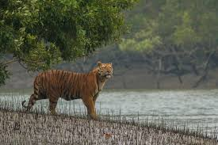

Sundarbans

About
The Sundarbans is the largest mangrove forest in the world and a UNESCO World Heritage Site, home to the Royal Bengal Tigers and diverse wildlife.
Fun Facts
- Largest tidal mangrove forest in the world.
- Unique ecosystem & wildlife.
- Home to the Royal Bengal Tiger & estuarine crocodiles.
How to Reach
- Air: Netaji Subhas Chandra Bose Int. Airport, Kolkata.
- Train: Canning station + boat ride.
- Road: From Kolkata via Canning or Godkhali.
Best Time to Visit
November to February: cooler weather, ideal for wildlife spotting.
Local Cuisine
- Fish curry: Hilsa & Prawn Malai Curry.
- Bengali sweets: Mishti Doi, Sandesh.
- Local rice dishes & fresh vegetables.
Accommodation
- Luxury: Sundarbans Jungle Resort, Taj Gateway Hotel.
- Mid-range: Sunderban Tiger Camp, Mangrove Village.
- Budget: Homestays & guesthouses in villages.

Local Attractions
- Sajnekhali Wildlife Sanctuary (bird watching)
- Sudhanyakhali Watch Tower (tiger spotting)
- Boat ride through mangroves
- Local village culture & fishing methods